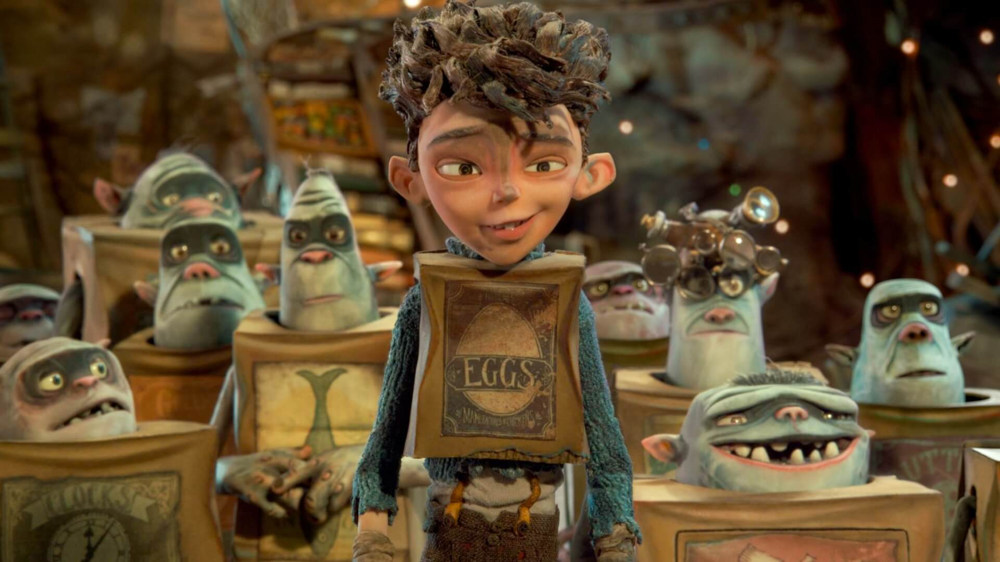
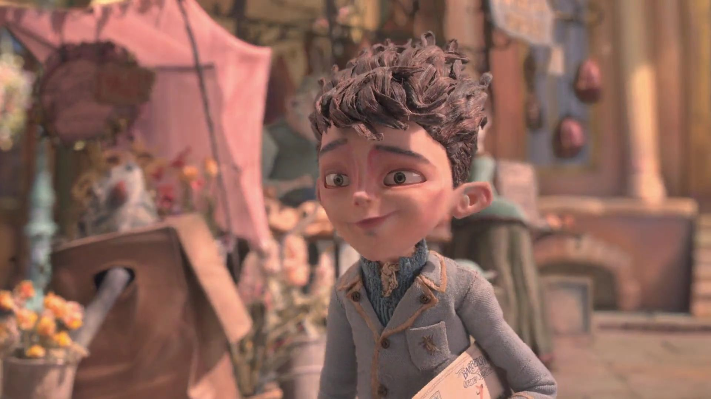
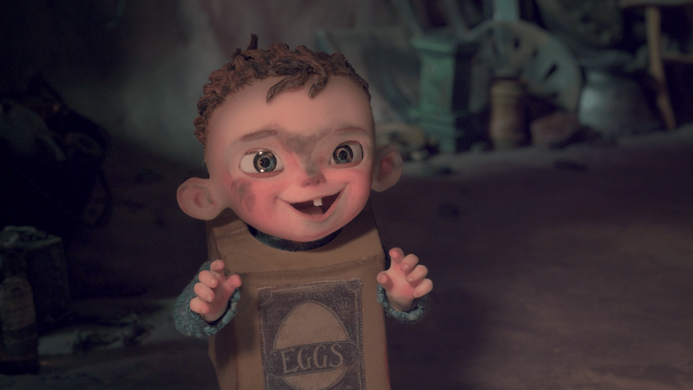

In the fictional hill-top town of Cheesebridge, Norvenia during the Victorian era, rumors abound that subterranean trolls (known as Boxtrolls for the cardboard boxes they wear) have kidnapped and killed a young child. Pest exterminator Archibald Snatcher strikes a deal with the city's leader Lord Portley-Rind to exterminate every Boxtroll in exchange for membership in the city's cheese-loving council called the White Hats, despite the fact that he is severely allergic to cheese. Snatcher hatches an evil plan and teams up with his three loyal advisors, consisting of his two dim-witted bodyguards, Mr. Trout and Mr. Pickles, and his cunning second-in-command and best friend, Mr. Gristle, to kill the White Hats, exterminate the Boxtrolls, rule Cheesebridge and rename it "Snatcher-ville" In actuality, the Boxtrolls are peaceful and emerge from underground at night to scavenge for discarded items with which to make useful inventions. A human boy named Eggs lives among them, cared for by a Boxtroll named Fish. As Eggs grows up, he becomes dismayed by the disappearing Boxtrolls seized by Snatcher. After Lord Portley-Rind's daughter Winnie sees Eggs with two Boxtrolls, Snatcher captures Fish. Eggs sneaks to the surface to find Fish and emerges in an annual fair to commemorate the disappearance of the "Trubshaw Baby" who was allegedly killed by Boxtrolls